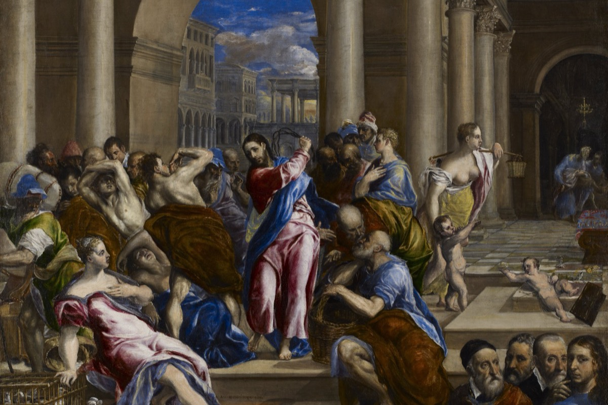

Five cases in paid self-help and spirituality, examined through their own sales pages, fundraising advice, court records and income disclosures. What is being promised, and what happens when it fails?
A labeled case study /21 sources/ 13 min read
scroll

El Greco, Christ Driving the Money Changers from the Temple. Minneapolis Institute of Art, public domain. Museum recordThe financial promise
What happens when the money doesn't come?
Kenneth Copeland Ministries promises a return on giving. Its page titled "I’m giving. Why am I not receiving?" asks the disappointed donor to examine their tithing, forgiveness and speech. The ministry's advice
The person collecting the money also explains why the promised return hasn't arrived. A disappointing result can lead to another offering, or another attempt to correct the donor's faith. The arrangement can keep collecting without ever showing that its claim works.
A teacher's fee can buy instruction, a place to practice and help when you get stuck. That work can be worth paying for. Cost alone tells you little about the arrangement: a free introduction can lead to a costly commitment.
These cases sell a seminar, a book, a theology of giving, a business opportunity and a meditation course. Compare the promise, the payment terms and the response to disappointment. A copyright dispute needs different evidence from a medical or income claim.
The seminar
Landmark's continuing courses
Landmark sells personal-development seminars. Its American landing page lists the standard Forum at $1,177: three days, in person or online, followed by a Tuesday evening. A $2,277 online Signature version has two days, an evening and two private sessions. These are advertised prices checked in October 2026. The company promises lasting changes in relationships, effectiveness and satisfaction. Formats and tuition
The standard format takes considerable time. Landmark's program-details page describes full days running roughly from 9 a.m. to 10 p.m., with breaks every two to three hours and a longer dinner break. Include that schedule in the purchasing decision. Program details
After the Forum, the company offers an Advanced Course, communication courses, coaching and the Self-Expression and Leadership Program. Graduates can also purchase a $39 monthly subscription with a minimum twelve-month commitment, a $468 obligation before any additional charges. The subscription page says most courses are available separately, and some special events can cost extra. Further programsSubscription terms
Continuing classes can be worth buying. The concern would be pressure to buy while you're exhausted or emotionally exposed, especially if hesitation becomes evidence of the problem the course promises to solve. An Advanced Course alone doesn't establish that pressure. Ask whether you can take the information home and decide later.
Landmark advertises that more than 94 percent of surveyed participants reported a profound and lasting difference. That is its survey claim. The landing page doesn't give a reader the response rate, a comparison group or enough detail about follow-up to turn it into an independent measure of effectiveness. A friend's account may explain why they liked the course; it doesn't answer what you are likely to gain. Landmark's survey claim
The book
A Course in Miracles and its copyright
The publisher of A Course in Miracles says paid teachers, conferences and workshops are unnecessary. Its own FAQ is a useful document to bring to anyone selling you required instruction.
Helen Schucman was a clinical and research psychologist at Columbia's medical center. Between 1965 and 1972 she recorded an inner dictation that she attributed to Jesus; her colleague William Thetford typed her notes. The Foundation for Inner Peace preserves her account of that experience. It documents what she reported, without giving an outsider a way to verify who was speaking. The publisher's history
The resulting Text, Workbook and Manual teach a metaphysics of separation and a practice of forgiveness. The Foundation describes their purpose as removing obstacles to awareness of love and oneness with God. Its FAQ states that outside courses and study groups are optional, and it offers an online edition of the complete work. Foundation FAQ
In October 2003, a federal district court found that the work had been generally distributed without the copyright notice required under the law governing its 1975 publication. The earlier defense based on divine authorship had already been dismissed. The full opinion
One revealing detail is the evidence the publishers themselves had circulated. Accounts of widespread photocopying appeared in a founder's book and recorded talks. During the litigation, passages in the book were removed and earlier statements were described as exaggerations. Judge Robert Sweet weighed those contradictions when finding that the distribution had been unrestricted. Sharing only with sympathetic readers didn't make it a legally limited publication.
The ensuing judgment voided the specific registration, A693944. It didn't decide the book's supernatural origin or abolish copyright for spiritual writing. It also shouldn't be read as a blanket ruling on every later edition or translation. The judgment
Copyright can fund editing and distribution. The troubling part of this record is the retreat from earlier accounts of sharing when those accounts threatened control of the text. The present publisher's open access and optional outside instruction deserve attention too.
The donation
Giving with an expected return
Some prosperity ministries teach that a financial gift is a seed that will produce a return. The fundraising appeal becomes part of the promised solution to the donor's financial trouble.
The prosperity gospel connects Christian faith with material blessing, often health and wealth. Historian Kate Bowler describes the appeal of a belief that makes success feel attainable through faith. Particular teachings vary; the financial claims below belong to this ministry. Bowler on the prosperity gospel
Kenneth Copeland Ministries supplies a specific example. Its explanation of a hundredfold return tells readers to expect a return on gifts, including money. It says hundredfold means the greatest possible return rather than necessarily a literal multiplication by one hundred. A separate explanation of naming a seed says giving money does not itself create healing or prosperity; the gift serves as a point of contact for faith. Those qualifications matter. Hundredfold returnNaming a seed
Then read its page for the disappointed giver. It asks whether you're tithing, walking in love, watching your words and actively receiving. It prescribes a tithe of 10 percent of gross income, with offerings in addition. Lack of prosperity sends the reader toward a review of their giving and conduct. The article offers no point at which an absent return would count against its promise. Advice to the disappointed giver
This doesn't prove deliberate deception. Believers can sincerely think faith affects their finances. It shows how the claim protects itself: the recipient of the money keeps the promise intact while asking the donor to repair their behavior. Someone already short of money may feel obliged to give more.
A church can take your rent, illness and hopes seriously. Giving can express gratitude, help neighbors and support a community you value. Those are intelligible reasons to donate without expecting a profit. A promise that the payment will cause prosperity needs another kind of justification.
What happens if you give and remain poor? Does the ministry accept that outcome without finding a defect in your faith? Can you keep attending while declining to give?
The testimonial
MLM income and wellness claims
Multi-level marketing, or MLM, sells through participants who can earn from their own sales and from activity in a network of recruits. The network beneath a participant is called a downline. The FTC distinguishes legitimate MLM businesses from illegal pyramid schemes; selling a real product doesn't by itself settle that distinction. It advises looking at the actual incentives for recruitment, purchases and sales. FTC consumer guidance
The FTC's 2024 staff report examined seventy publicly available income disclosures, using statements reviewed in February 2023. In the MLMs studied, the vast majority of participants received $1,000 or less annually in payments from the companies, and many received nothing. Most disclosures left out expenses; many also excluded low earners from the prominent income tables. These are findings about those disclosures, not a measurement of an industry-wide loss rate. FTC report, executive summary
There is an additional limit worth preserving. Payments from the company aren't necessarily the participant's entire revenue: separate retail sales may not be included. They also aren't profit. Inventory, fees, training and travel can consume them. The report takes the companies' figures at face value rather than independently auditing their books. It gives ample reason to question an income pitch without inventing a precise percentage of people who lose money.
If a friend calls their business an answer to prayer, they may mean it. If they earn a commission when you join or buy, ask about that interest and the ordinary participant's net results. Written figures help when a close friendship makes the conversation awkward.
Goop provides a different case. The company sells wellness products directly, so it belongs here for its health claims rather than an MLM structure. In 2018 it agreed to $145,000 in civil penalties in a California consumer-protection settlement. Prosecutors alleged unsupported claims that jade and rose-quartz eggs could balance hormones and prevent uterine prolapse, and that a flower-essence blend could help prevent depression. The settlement required scientific support for product claims and offered refunds to eligible buyers. It was a civil settlement, not a criminal conviction. Prosecutors' announcement
A customer might enjoy an object or ritual. That experience supplies no evidence for an advertised effect on hormones or depression. The company still needs to substantiate the medical claim.
The meditation course
What the TM fee buys
Transcendental Meditation (TM) is a method taught by certified teachers, generally practiced with eyes closed for twenty minutes twice a day. Its American website currently lists a standard course fee of $980, with income-based rates, installment payments and possible partial scholarships. Both in-person and hybrid courses include individual instruction and further sessions, followed by access to teachers and an app. Calling the entire fee the price of a secret word omits most of what the organization says it provides. Course fee and terms
The published satisfaction guarantee also has conditions. Participants must complete the course, a follow-up and a personal tune-up, then practice regularly for at least thirty days. A refund request must arrive within sixty days of personal instruction. This is information a buyer needs before paying, especially if they assume a satisfaction guarantee means they can simply change their mind.
There is credible support for a limited health benefit. The 2025 American Heart Association and American College of Cardiology blood-pressure guideline says TM may be reasonable as an addition to lifestyle or medication interventions, and reports average reductions of about 5/2 mm Hg (systolic/diastolic) in short-term trials. It also notes small, short trials and the need for further data. That supports considering TM alongside established care; it doesn't establish a unique route to health or a substitute for prescribed treatment. 2025 guideline, lifestyle interventions
The wider movement makes claims that need separate scrutiny. Its World Peace Movement describes Yogic Flying as progressing from hopping to hovering and then flight; the stage it describes as practiced today consists of short hops. The account of later stages is a claim by the organization, not demonstrated human levitation. The movement's account
The Maharishi Effect goes further: group meditation is said to improve conditions for people outside the group, including reducing crime. Its university promotes a 1993 Washington, D.C., project as evidence. The published study estimated crime reductions using a statistical model, including temperature and prior crime patterns. Its comparison was an estimated Washington without the meditation group. The study did not randomly assign cities to receive the intervention. The university's claimThe original study
The authors report extensive checks. Even so, attributing city-wide changes to meditation requires trusting the model's account of what otherwise would have happened. My reading is that this warrants more caution than a trial measuring a meditator's blood pressure. Health evidence cannot establish an effect on crime.
Value the instruction and follow-up on their own terms: what support are you buying, how does the refund work and would less expensive instruction meet your needs? A health benefit doesn't require accepting every claim made by the movement.
Before paying
Questions with checkable answers
Ask for answers in writing, while you still have time to decide.
A book, an hour with a teacher and a promised financial return are different purchases. Write down what you're supposed to receive and the evidence you'll receive it. A testimonial can describe a class or community; medical and income claims need results.
What is the full commitment?
Get the total cost in writing, including recurring fees, required purchases and the term before cancellation. Landmark's monthly subscription and TM's refund conditions are concrete terms to read. Ask which further courses are optional.
What would count as a failed promise?
A course can be disappointing without the student being defective. A donation can support a church without producing a financial return. If every failure proves that you need to believe harder or spend more, the seller has given you no way to assess the promise.
Who gets paid when I join?
Ask about referral commissions, required inventory and recruitment incentives. For a donation, ask how spending is overseen and who can question the leader's use of the money. A nonprofit label doesn't answer those questions.
Can I take time to decide?
Make the financial choice away from the event, with the terms in front of you. Notice whether declining is accepted or treated as disloyalty, fear or spiritual failure. You need room to disagree with the person who benefits from your agreement.
These records cannot tell us how often those pressures occur inside each organization, or what every participant takes away. They do let us check advertised terms and specific claims. The places where an absent benefit becomes the customer's fault deserve the closest reading.
Evidence and limits
What the sources can establish
Official sales pages are strong evidence of advertised terms and claims. They aren't independent evidence that the product works. The court records establish what was decided in the copyright dispute; the FTC report describes its selected income disclosures. The assessment of financial pressure is my reading of these records.
The ACIM copyright case.October 2003 opinion and ensuing judgment. The opinion addresses unrestricted distribution under the law applicable to this work.
Kate Bowler.PBS interview on the prosperity gospel's appeal and expectations.
A posted policy doesn't show how an organization handles every refusal or complaint. That would require evidence from participants, staff and records beyond the public documents used here.